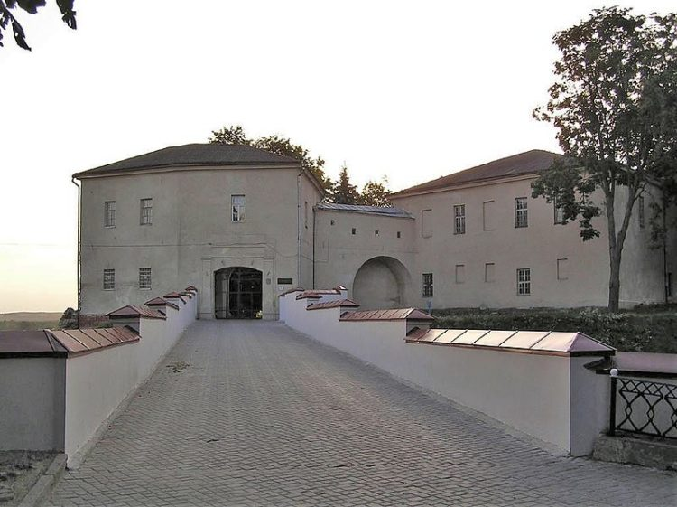
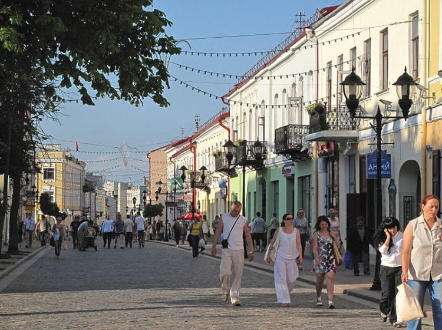
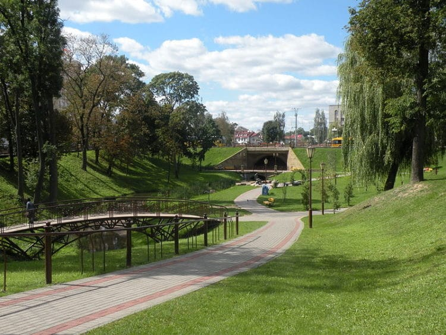

Если вы хотите, чтобы ваше путешествие было не только увлекательным, но и познавательным, непременно включите в свой маршрут следующие экскурсии в Гродно:
Старый замок

Дворец и мост, входящие в комплекс Старого замка в Гродно
Старый замок
Величественная постройка располагается в окружении валов, и сегодня хранит в своих стенах по-настоящему ценные музейные экспонаты. В прежнее время крепость использовалась в качестве резиденции для Стефана Батория. Польский король превратил ее в роскошный дворец. Старинные стены имеют богатую историю, хотя и находятся в полуразрушенном состоянии. Между замком и городом протянут красивый арочный мост. Ваша поездка в Гродно будет неполной, если вы не станете посещать столь важные достопримечательности Беларуси.
Советская улица

Центральная улица в историческом центре Гродно
улица Совецкая
Гиды в Гродно советуют прогулки по этой улице тем, кто хочет перенестись в провинциальные городки Польши или, например, Венгрии. Повсюду не только ресторанчики и сувенирные лавки, а также лучшие отели в Гродно. Но и старинные двухэтажные коттеджи с цветами на окнах, и у каждого дома своя история. Мы рекомендуем вам совершить ночной или вечерний променад: вся Советская улица будет подсвечиваться мягким светом от кованых фонарей. Такие интересные места Гродно стоит осматривать в любое время дня и года.
Советская улица

Парк Жилибера
Парк Жилибера
Парковый комплекс был обустроен на территории ботанического сада, на которой талантливый ученый прежде выращивал уникальные растения. На площади находятся современные арт-объекты, ухоженные кустарники и клумбы, лавочки для отдыха, кованые скамейки и небольшой пруд. Часть парка названа «Долиной Швейцарии» за аналогичные швейцарским пейзажи. Если вы хотите провести время в спокойной и умиротворяющей атмосфере, приезжайте сюда непременно.